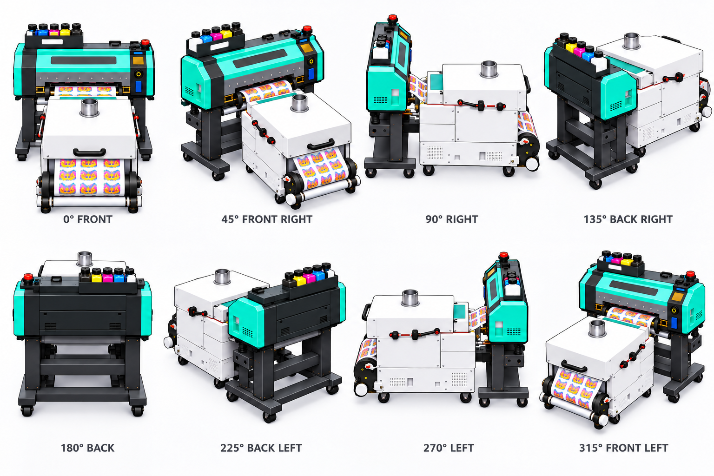
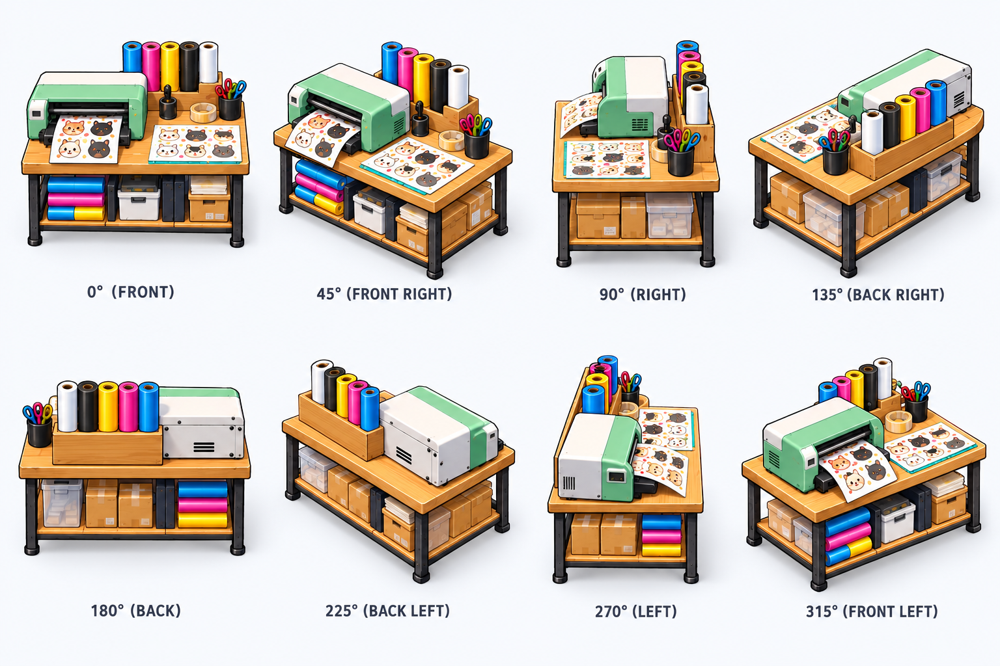
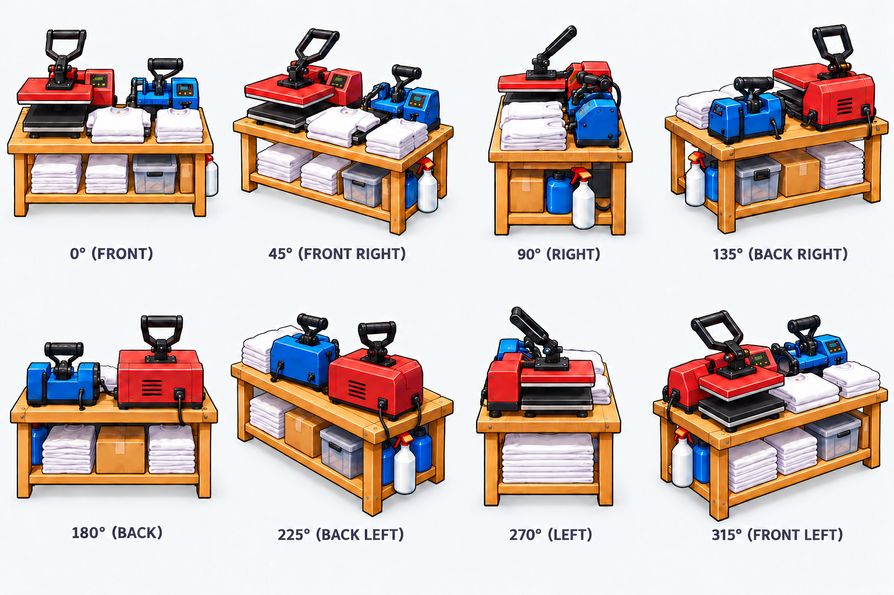
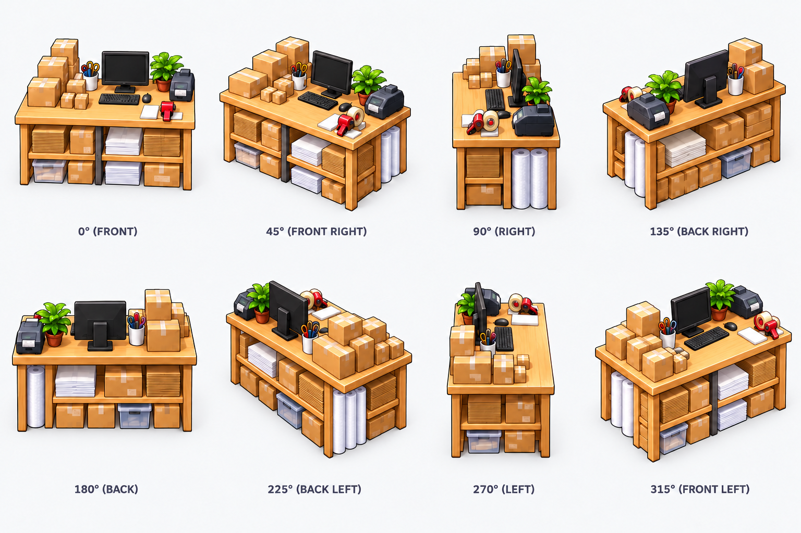
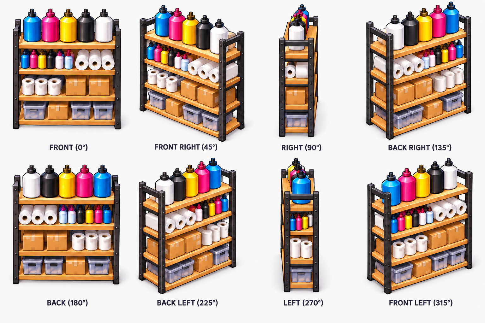
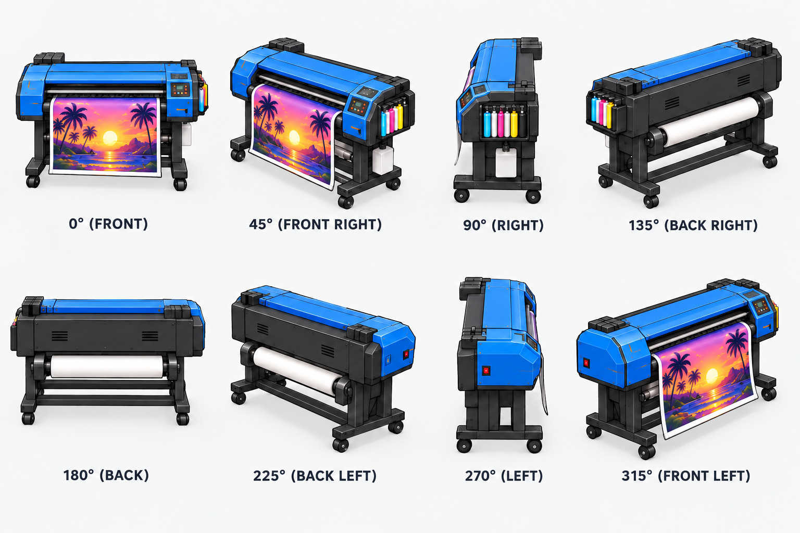
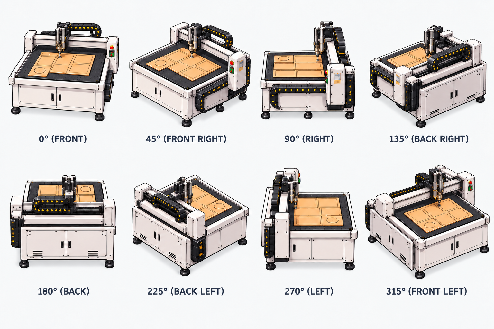
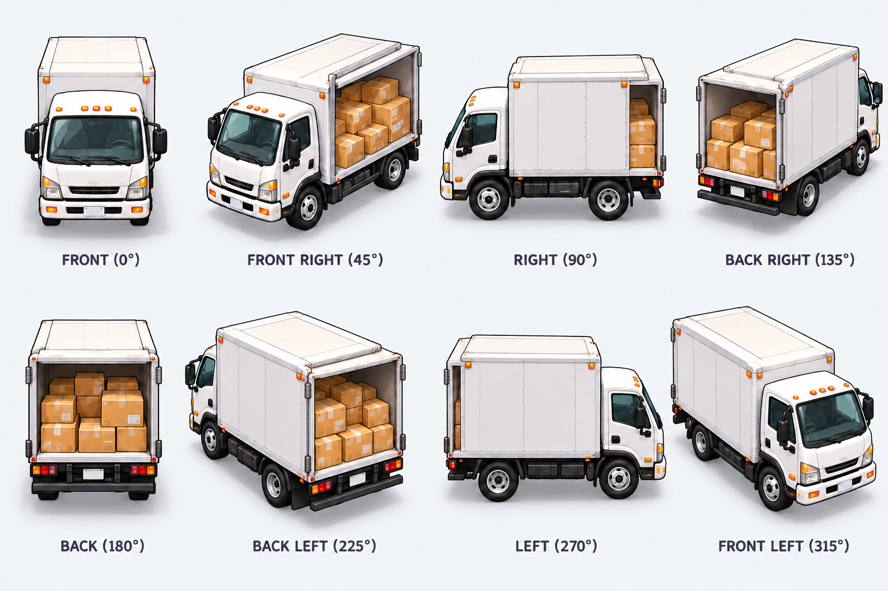

ARTWORK REVIEW • NOT INSTALLED IN THE GAME
Eight angles. Every equipment choice.
Each sheet reads left to right: 0°, 45°, 90°, 135°, then 180°, 225°, 270°, 315°. Eight distinct designs cover all ten catalog choices. The three desk roles share the same artwork; both DTF lines share the connected printer/shaker design.
Generated artwork candidates. Directional corrections have been applied, but mechanical details, accessory positions and consistent scale still require review. These pale-background sheets are not transparent runtime sprites. The Windows game has not been changed.
DTF printer + shaker line
Game roles: dtf, dtf2, shaker, shaker2 • Click image for full resolution.

Sticker print / cut station
Game roles: sticker • Click image for full resolution.

Heat press station
Game roles: heat • Click image for full resolution.

Artwork / inspection / packing desk
Game roles: art, finish, pack • Click image for full resolution.

Material storage
Game roles: storage • Click image for full resolution.

Roll-to-roll printer
Game roles: banner • Click image for full resolution.

CNC flatbed cutter
Game roles: cnc • Click image for full resolution.

Shipping dock truck
Game roles: dock • Click image for full resolution.
